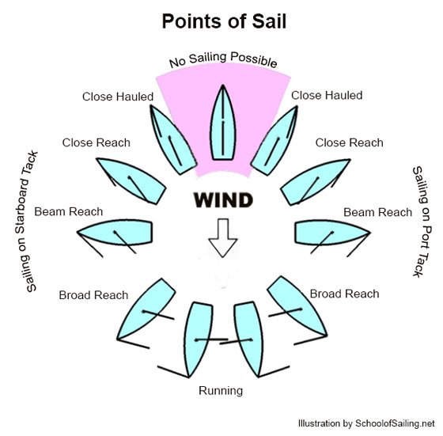
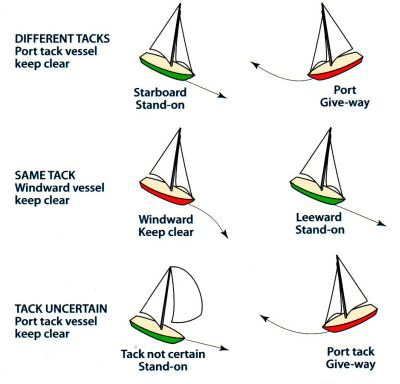

Chart Datum: 57.9 m MASL
Checking location…

Example:
“Mayday, Mayday, Mayday. This is sailboat Dragonfly.
We are taking on water near Crystal Bay. Position approximately 45.41° N, 75.76° W.
Three people on board. Request immediate assistance. We are launching red flares.”